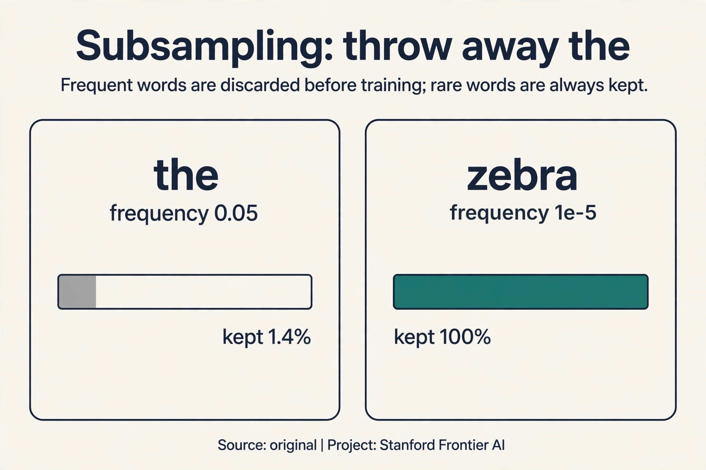
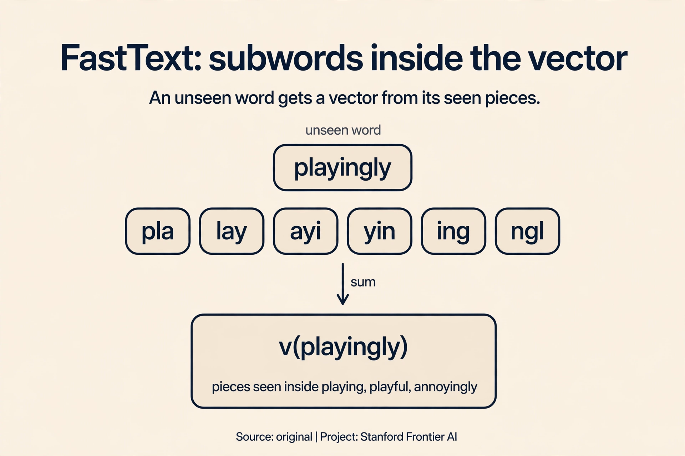

Lecture 2: Word Vectors 2 and Word Senses
Video blocked (ad-blocker or local file mode).
Watch on YouTubeVideo not loading? Watch on YouTube
Original lecture. Christopher Manning continues word vectors: optimization, evaluation, negative sampling, GloVe, senses, and neural classifiers.
The bill comes due
Lecture 1 built the word vector and left two bills on the table. The first is money: the softmax normalizes over the whole vocabulary on every prediction, and that sum is ruinous. The second is truth: do the vectors actually capture meaning, or did we just do expensive arithmetic? This lecture pays both bills, then uses the vectors to build the first neural classifier of the course.
On this page: Subsampling: throw away “the” · The 3/4 power · FastText · Static vectors in production · Watch and go deeper
How big a step: the learning rate
SGD takes a step in the negative gradient direction. The learning rate alpha sets the step size. The lecture’s sane starting values: 1e-3, 1e-4, 1e-5 (04:59 ⏱04:59). Why so small? Watch a step that is too big.
Take the toy loss L = theta squared, starting at theta = 2. The gradient is 2*theta = 4.
alpha = 0.1: theta = 2 - 0.1*4 = 1.6 (closer to 0, converging)
theta = 1.6 - 0.1*3.2 = 1.28 ...
alpha = 1.1: theta = 2 - 1.1*4 = -2.4 (overshot past 0)
theta = -2.4 - 1.1*(-4.8) = 2.88 (farther out, diverging)
The failure mode is divergence: oversized steps oscillate and grow instead of descending.

Two more mechanics. Initialization: start with random small numbers. Zeros create false symmetries (08:43 ⏱08:43): every unit computes the same thing, gets the same gradient, and learns the same thing forever. Randomness breaks the symmetry. And plain gradient descent, the whole corpus per step: the lecture is blunt, “we never use” it. SGD with mini-batches of 16 or 32 is the default, and its noise jiggles the optimizer out of bad spots.
Do the vectors work?
Do the trained vectors capture meaning? Three checks:
Neighbors. GloVe vectors trained at Stanford, 100 dimensions (12:10 ⏱12:10): the sign patterns of “bread” and “croissant” align across dimensions. The nearest neighbors of “USA” are Canada, America, U.S.A. Words that keep the same company sit in the same neighborhood.

Analogies. Vector arithmetic captures relations. The famous one: king - man + woman = queen (16:44 ⏱16:44). The offset between “man” and “woman” encodes something like gender. Adding it to “king” lands on “queen”. Watch it on a toy, by hand, in two dimensions:
king = [0.9, 0.1] man = [0.8,-0.2] woman = [0.2, 0.7] queen = [0.3, 0.9] king - man + woman = [0.9-0.8+0.2, 0.1+0.2+0.7] = [0.3, 1.0]
The result [0.3, 1.0] sits almost on top of “queen” [0.3, 0.9]. The relation survives the arithmetic. The lecture shows more: Australia:beer :: France:champagne, Russia:vodka, pencil:sketching :: camera:photographing, Obama:Clinton :: Reagan:Nixon, tall:tallest :: long:longest.

Then the honesty note, and it matters. “I cheated. I only showed you ones that work.” Analogies are cherry-picked demos. And “no one uses this stuff anymore”: analogies proved the geometry was real, but they were never a production technique. A demo is not a product.
They are a fast visual proof that the vector space encodes relations, not just neighborhoods. The offset between word pairs is consistent enough that arithmetic works on the good cases. But the lecture is explicit: nobody ships analogy solvers. Trust the evaluations below, not the demos. A fixed benchmark of thousands of analogy questions, scored mechanically, with failures counted alongside successes. That exists: the standard analogy test set. The lecture’s point is that even passing it does not make analogies a product.
The expensive sum: negative sampling
Now the money bill. The naive softmax normalizes over the whole vocabulary: 400,000 words times 100- or 300-dimensional dot products, per prediction (28:14 ⏱28:14). Count it: 400,000 x 300 = 120 million multiply-adds for one context-word prediction. Training makes billions of predictions. The denominator is the bottleneck of the whole method.
The key question: do we need a full probability distribution at all? The training signal only needs to say “this real pair scores higher than random pairs”. Negative sampling reframes the job: “train simple logistic regressions.” For each real (center, context) pair, sample k negative pairs from a noise distribution. Train k+1 binary classifiers: is this pair real or noise?

Count the new cost. With k = 5 negatives, each training step evaluates 6 dot products instead of 400,000: roughly 66,000 times cheaper. The sigmoid function turns each score into a probability (30:10 ⏱30:10): high score for the real pair, low scores for the noise pairs. A sign-symmetry trick keeps the math consistent without ever summing over the vocabulary.
What did we give up? The model no longer outputs true probabilities over the vocabulary. For learning vectors, that was never needed.
Subchapter: subsampling, throw away “the”
Frequent words are a tax. “The” appears in almost every window, so it consumes training steps while teaching almost nothing: its vector barely moves anymore, and it dilutes the signal of rarer neighbors. Word2vec subsamples: discard each occurrence of word w with a probability that grows with its frequency.
The formula: P(keep w) = sqrt(t / f(w)), with threshold t = 1e-5 and f(w) the word’s frequency. Watch it on a toy. “The” has frequency 0.05:
P(keep "the") = sqrt(1e-5 / 0.05) = sqrt(0.0002) = 0.014
“The” survives 1.4% of its occurrences. 98.6% are thrown away before training. A rare word with frequency 1e-5: P(keep) = sqrt(1) = 1.0, always kept. The corpus shrinks, the rare words get relatively more training, and the vectors improve.

Subchapter: the 3/4 power in negative sampling
Negatives come from a noise distribution over the vocabulary. The obvious choice is the raw unigram frequency: sample words as often as they appear. Word2vec does something stranger: it raises each frequency to the 3/4 power and renormalizes. Watch what the exponent does on a toy.
"the": f = 0.05 f^0.75 = 0.106 "zebra": f = 0.0001 f^0.75 = 0.001 ratio before: 0.05 / 0.0001 = 500 ratio after: 0.106 / 0.001 = 106
The 3/4 power compresses the gap: “the” is sampled 106 times more often than “zebra” instead of 500. Frequent words still dominate the negatives, but rare words get sampled more than their raw frequency allows. Why does that help? Negatives teach the model what is not a real pair. If negatives were always “the”, “of”, and “and”, the model would learn nothing about distinguishing “zebra” from noise. The 3/4 power is an empirical hack from the word2vec paper: no theorem, just better vectors.
Subchapter: FastText, subwords inside the vector
Word2vec gives one vector per whole word. An unseen word gets nothing.
FastText (Bojanowski et al., 2017, Meta) fixes this by building each
word vector from its character n-grams. The word “playing” with n = 3
becomes the set {
Watch it handle the unknown. “Playingly” never appeared in training. Its n-grams (pla, lay, ayi, yin, ing, ngl, gly) mostly did appear, inside “playing”, “playful”, “annoyingly”. Sum their vectors: a sensible vector for an unseen word, built from seen pieces. Two wins. Morphology: “run”, “runs”, “running” share n-grams, so their vectors share signal. Out-of-vocabulary words: any string gets a vector, no retraining.
The price: n-gram tables are big (millions of n-grams hashed into buckets), and summing pieces blurs meanings that are not compositional. Still, for morphologically rich languages (Finnish, Turkish, German) and for noisy text (tweets, typos), FastText beats plain word2vec clearly.

Mapping back: what negative sampling answers
| Softmax pain | Negative sampling answer | How |
|---|---|---|
| 400,000 x 300 = 120M multiply-adds per prediction | 6 dot products per step | 1 real pair + k negatives: ~66,000x cheaper |
| The denominator sums the whole vocabulary | No denominator at all | k+1 binary decisions replace the full distribution |
| Training needs true probabilities | It needs rankings, not probabilities | Sigmoid pushes real pairs up, noise pairs down. The geometry is what matters |
Because the training goal was never the probabilities. The goal is vectors whose dot products rank real pairs above noise pairs. Each logistic regression pushes the real pair’s score up and the noise pairs’ scores down. The geometry that results is the same geometry the full softmax would have learned, at a fraction of the cost. From a noise distribution over the vocabulary, typically the unigram distribution raised to the 3/4 power. Frequent words appear as negatives more often, which forces the model to distinguish real associations from mere frequency.
A second path: GloVe counts ratios
Word2vec predicts, one window at a time. GloVe (Jeffrey Pennington, Stanford) starts from the other end: the full co-occurrence counts. Its key insight is that ratios of co-occurrence probabilities expose meaning (43:20 ⏱43:20).
Read the lecture’s table. P(k | ice) is the probability that word k appears near “ice”. Compare ice and steam:
| k | P(k|ice) | P(k|steam) | ratio |
|---|---|---|---|
| solid | high | low | 8.5 |
| gas | low | high | 0.085 |
| water | high | high | ~1 |
| fashion | low | low | ~1 |
Ice and steam both co-occur with “water” and “fashion” at similar rates. Ratios near 1: noise, shared background. But “solid” is 8.5 times more likely near ice than near steam, and “gas” flips to 0.085. The ratio cancels what ice and steam share and isolates what distinguishes them: the solid-gas dimension of physics. The signal lives in the ratio, not in the raw counts.

GloVe fits a log-bilinear model to capture this: the dot product of two word vectors approximates the log co-occurrence probability, plus learned biases. Where word2vec learns by predicting online, GloVe regresses on the global count matrix. Prediction versus counting. Both produce dense vectors with similar geometry, and in practice the choice rarely decides downstream results.
When you want a model that uses global count statistics directly and trains fast on aggregated co-occurrence matrices. Both produce dense vectors with similar geometry. In practice the choice rarely decides downstream results. Word2vec predicts context words online, one window at a time. GloVe regresses on the full co-occurrence matrix. Prediction versus counting. The ratio table shows why counting works: ratios of probabilities carry the semantic signal.
Why two vectors, averaged at the end
Lecture 1 gave each word two vectors: v for center use, u for outside use. Why keep both? It is a math convenience. If one vector served both roles, the dot product of a word with itself would be a square, which distorts training. The slides’ octopus example shows a word appearing as its own context: with shared vectors, that self-pair would dominate. Two vectors keep the roles clean. At the end, average the two into one final vector per word.
What is used where: static vectors in production
- FastText (Meta). The open-source library ships pretrained vectors for 157 languages and a text classifier used in production content moderation and language identification. Public: paper, code, models.
- GloVe. spaCy’s default English vectors for years; still the standard baseline in information retrieval research. Public.
- Word2vec (gensim). The reference implementation most practitioners reach for. Powers semantic search prototypes and recommender candidate generation across industry. Specific company deployments vary; verify per case.
- Modern LLMs. None of GPT, Llama, Gemini, or Mistral use static word vectors. Subword embeddings are learned during pretraining. The static vector survives in retrieval systems, on-device models, and anywhere compute is tight.
- Unknown, not guessed. Which closed labs still use static vectors in any production pipeline is not public.
Real pair: (banking, money). Sample k = 5 negatives from the noise distribution: say (banking, zebra), (banking, the), (banking, quantum), (banking, spoon), (banking, although). Compute 6 dot products. Sigmoid each. The loss pushes sigma(v_banking . u_money) toward 1 and the five noise sigmoids toward 0. Backprop updates 6 outside vectors and 1 center vector. Cost: 6 dot products. The full softmax would have needed 400,000. Same geometry, 66,000 times cheaper. The negatives stop representing the noise distribution. With k = 1, each step contrasts the real pair against one random word: the gradient is pure noise and training crawls. k = 5 to 20 is the standard range. Frequent words want larger k.
FastText with skip-gram and negative sampling. The corpus is small, so skip-gram gives rare words more signal. FastText’s subword n-grams share statistics across inflected forms, which matters for an agglutinative language like Quechua. Subsample frequent words aggressively (threshold 1e-5) since 2M words is thin. Evaluate intrinsically: nearest neighbors of known words, judged by a speaker. Do not trust analogies on a corpus this small. You can, and for downstream tasks it may win. But it needs far more compute, and its Quechua coverage depends on pretraining data you do not control. Static vectors are cheap, inspectable, and yours. The applied rule: static vectors first, contextual models when the task demands them.
Training steps are a fixed budget. Every step spent on “the” is a step not spent on a rare word. Deleting 98.6% of “the” occurrences hands those steps to rarer words. It also widens the effective window: with “the” removed, the window spans more content words, so each center word sees more informative neighbors. A list is binary and hand-built: the WordNet problem again. Subsampling is graded and automatic: frequency decides, with a smooth formula. Words near the threshold are kept sometimes, not never. The corpus decides its own stopwords.
For static vectors, the honest answer is that the choice rarely decides results: both give similar geometry. Pick word2vec (skip-gram, negative sampling) for streaming or huge corpora, since it trains online. Pick GloVe when you have the full co-occurrence matrix and want fast training on it. Pick FastText over both when morphology or out-of-vocabulary words matter. And check first whether you need static vectors at all: a small pretrained transformer often beats all three on downstream tasks. Parallel training on aggregated counts. GloVe’s objective parallelizes over the co-occurrence matrix, so with the counts precomputed it trains very fast. Word2vec’s online updates are harder to parallelize without staleness.
Evaluation: intrinsic is fast, extrinsic is honest
How do you know the vectors are good? Two kinds of tests.
Intrinsic tests probe the vectors directly. Analogies, as above. Word similarity: human ratings on a 0-10 scale (tiger-tiger: 10, book-paper: 7.46, plane-car: 5.77, stock-phone: 1.62, stock-jaguar: 0.92). One sharp result: plain SVD on the same counts “works terribly”. Counting alone is not enough. The objective decides what the counts mean.
Extrinsic tests plug the vectors into a real task and measure end-to-end performance. The lecture’s example: named entity recognition on “Chris Manning lives in Palo Alto”. Extrinsic is slower but honest: it measures what you actually care about.

The rule: use intrinsic tests during development, because they are fast. Trust extrinsic tests before you ship, because a vector can ace analogies and still fail on your task.
Word senses: one vector is a superposition
Words have senses. “Pike” is a weapon (noun), a verb meaning to stab, and Australian slang for “chicken out”. “Coming down the pike” is none of those. In 2012, researchers trained sense vectors: bank 1 (money), bank 2 (river). Jaguar 1 (car: luxury, convertible), jaguar 2 (Mac OS X 10.3), jaguar 3 (guitar, keyboard, music), jaguar 4 (animal, hunter).
Modern word2vec gives one vector per word. That single vector is a superposition of the senses (57:50 ⏱57:50): all senses mixed together. “Field” (crop, rock, ice, sporting, math) behaves like a probability-density distribution over its senses: the vector is a weighted blend, and no single sense owns it.

One vector per word cannot say which sense is active in “the bank of the river”. The context-sensitive vectors of Lecture 9 exist to pay exactly this bill.
The first neural classifier
The lecture closes by spending the vectors on a real task: named entity recognition over a word window. Given “Chris Manning lives in Palo Alto”, label each word: PERSON, LOCATION, or neither.
The construction: take a window of 5 words, each a 100-dimensional vector. Concatenate: a 500-dimensional input. Multiply by an 8x500 matrix, add a bias, apply a nonlinearity. The 8-dimensional result is a learned re-representation of the window. A logistic classifier reads it and outputs the label.

Count the weights: 8 x 500 = 4,000, plus 8 biases. Classic classifiers had fixed inputs and a linear decision boundary. The neural version learns the representation and the boundary at once. The model is linear, but in the re-represented space, which the network itself learned.
The loss is cross-entropy H(p, q) (72:26 ⏱72:26). With gold labels (one correct class), it reduces to negative log likelihood. Watch it punish mistakes on a toy. Gold label: PERSON. Model A predicts [0.7, 0.2, 0.1]: loss = -log(0.7) = 0.36. Model B predicts [0.1, 0.8, 0.1], confident and wrong: loss = -log(0.1) = 2.30. Confident errors cost more. That is the whole behavior of the loss in one pair of numbers.
The 8-dimensional middle is not hand-designed. The network invents it, because inventing it reduces the loss. Lecture 3 derives the algorithm that makes this invention possible.
It re-represents the 500-dimensional window as 8 learned features. The classifier on top is linear, so all the nonlinear work happens in that re-representation. The network might learn a feature that fires on “capitalized word followed by a verb”, which separates PERSON from LOCATION. Nobody programs that feature. The gradient finds it. Because this classifier has no notion of order or long context. The window is a fixed-size peephole: two words left, two right. It works for NER because entity clues are local (“lives in” before “Palo Alto”). Lecture 5 builds models that read the whole sentence.
Recap: the whole lesson on one screen
- Step size matters. Alpha 1e-3 to 1e-5. The toy proves it: alpha 1.1 on theta-squared diverges (2 to -2.4 to 2.88). Alpha 0.1 converges. Initialize random and small. Zeros create false symmetries.
- The vectors work. Bread and croissant share sign patterns. USA sits near Canada, America, U.S.A. Geometry encodes meaning.
- Analogies are demos, not products. King - man + woman = queen, worked to [0.3, 1.0] against queen [0.3, 0.9]. “I cheated. I only showed you ones that work.”
- Negative sampling pays the softmax bill. 400,000 x 300 = 120M multiply-adds per prediction becomes 6 dot products: ~66,000x cheaper. Sigmoid on 1 real + k noise pairs.
- Ratios carry the signal. Ice versus steam: solid 8.5, gas 0.085, water and fashion near 1. GloVe regresses dot products on log counts.
- Evaluate honestly. Intrinsic is fast (analogies, similarity ratings). Extrinsic is honest (NER on “Chris Manning lives in Palo Alto”). Plain SVD works terribly: the objective matters.
- One vector mixes all senses. Pike, bank, jaguar, field: the single vector is a superposition, like a probability density over senses.
- The first neural classifier. 5 x 100 = 500 inputs, 8x500 matrix, logistic output. Cross-entropy: -log(0.7) = 0.36 for a good guess, -log(0.1) = 2.30 for a confident error. The magic is the intermediate layers.
Watch and go deeper
GloVe: Global Vectors (Tanmoy Chakraborty). How global co-occurrence counts plus prediction make word vectors.
Go deeper
- Distributed Representations of Words and Phrases and their Compositionality (Mikolov et al., 2013). Negative sampling and subsampling, the two training tricks.
- GloVe: Global Vectors for Word Representation (Pennington, Socher, Manning, 2014). The ratio argument and the log-bilinear objective.
- Enriching Word Vectors with Subword Information (Bojanowski et al., 2017). FastText: character n-grams inside the vector.
- Stanford CS224N course site. Slides, assignments, syllabus.
Official sources and further reading
Official: - Lecture 2 video and transcript. - GloVe paper (Pennington, Socher, Manning 2014): the ratio argument and the log-bilinear objective.
Further reading: - Mikolov et al. (2013), “Distributed Representations of Words and Phrases and their Compositionality”: negative sampling. - Reisinger and Mooney (2010), Huang et al. (2012): multi-prototype sense vectors, the 2012 approach the lecture contrasts with superposition.
Caveats from these sources. Analogy demos are cherry-picked. The lecture says so explicitly. The learning-rate toy and analogy toy above are original teaching toys. Word vectors here are word-level. Lecture 9 moves to subwords. Similarity ratings are human judgments with annotator disagreement.
Connections to the other courses
- This course: L03 derives backpropagation, which trains the NER classifier. L04 replaces the window classifier with a parser. L09 replaces static vectors with contextual ones, paying the superposition bill.
- CS336: L01 tokenization changed the input from words to subwords. The dense-vector embedding interface survived. Scaling laws subsume the “more data” intuition.
- CS229S: matrix factorization theory explains why SVD variants behave differently from GloVe.
Sources
- VIDEOLecture 2 video, Stanford Online YouTube
- NOTESOfficial subtitle transcript
- PAPERMikolov et al., Distributed Representations of Words and Phrases and their Compositionality (2013)
- PAPERPennington, Socher, Manning, GloVe: Global Vectors for Word Representation (2014)
- SUPPLEMENTStanford CS224N course site